Cajami Nersia
Seelenstern
„Wenn die Magie von Sonne, Mond und Sternen deine Seele berührt“
Jede Seele trägt ihr eigenes Licht in sich. Gemeinsam entdecken wir das Funkeln, das dich wieder zum Strahlen bringt. Lass uns deine innere Sonne, deinen Mond und deine Sterne neu entdecken.
Ich höre dich und ich sage dir auch, was ich sehe. Ich fühle rein, ich gebe dir Impulse. Ich schaue mit dir auch auf das, was tiefer gesehen werden möchte.
Was sich zeigen darf, ist oft ein Gefühl von innerer Freiheit und Herzenswärme.
Wenn sich Themen im Leben wiederholen
Manchmal wiederholen sich bestimmte Situationen im Leben immer wieder und du fragst dich vielleicht:
- Warum ist das so?
- Was steckt dahinter?
- Warum gerate ich immer wieder an ähnliche Punkte?
Oft haben solche Erfahrungen einen tieferen Zusammenhang. Manches zeigt sich nicht, um dich festzuhalten, sondern um gesehen zu werden.
Themen, die sich wiederholen, tragen oft Hinweise in sich: Hinweise auf das, was verstanden werden möchte, auf das, was sich verändern darf, oder auf das, was in dir gesehen werden möchte.
Gemeinsam können wir hinschauen, welche Muster sich zeigen, was dahinterliegen könnte und welche neuen Impulse sich daraus öffnen dürfen.
Meine Wahrnehmung
Schon während eines Gesprächs nehme ich oft sehr viel wahr. Während du erzählst, fühle ich in deine Energie hinein und erkenne manchmal, warum bestimmte Situationen entstehen, was sich verändern möchte oder welche Potenziale in dir liegen.
Ich nehme nicht nur das Gesagte wahr, sondern auch das, was zwischen den Worten liegt. Das, was sich zeigt, ohne ausgesprochen zu werden.
Dabei arbeite ich verbunden mit der geistigen Welt und empfange Impulse, die sich in diesem Moment zeigen. Oft wird dadurch sichtbar, warum bestimmte Dinge geschehen oder was sich im Inneren bewegen möchte.
Ich habe die Gabe des Sehens. Diese fließt in meine gesamte Arbeit ein.
Über mich
Ich begleite nicht nur aus Wahrnehmung, sondern auch aus eigener Erfahrung. Schon früh habe ich gespürt, dass mein Weg eine tiefere Aufgabe in sich trägt. Vieles konnte ich lange nicht einordnen. Ich habe es eher gefühlt als verstanden.
Ich selbst bin durch Schmerz, innere Prozesse und eigene Heilungswege gegangen. Gerade deshalb weiß ich, wie sich Krisen, Fragen oder Wandlungsprozesse anfühlen können.
Ich kann mich nicht nur intuitiv hineinfühlen, sondern auch aus eigener Erfahrung verstehen, was ein Mensch in solchen Phasen durchlebt.
Heute möchte ich das, was ich selbst erfahren und erkannt habe, in meine Begleitung weitergeben und andere auf ihrem Weg unterstützen. Es berührt mich immer wieder zu sehen, wie Menschen nach inneren Prozessen, Klärung oder Heilung wieder erblühen.
Es erfüllt mich zutiefst und bestätigt mir immer wieder, dass ich meinen richtigen Weg gefunden habe.
Lass mich ein Impuls für dein inneres Wachstum sein.
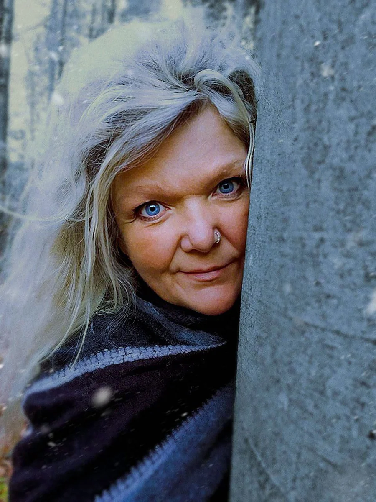
Begleitung für Herz, Seele und Leben
Nicht jeder Mensch kommt mit einer klaren Frage. Manchmal ist da einfach ein Gefühl von Alleinsein, innere Traurigkeit oder der Wunsch nach einem echten Gegenüber.
Ich bin auch dafür da, Menschen zu begleiten, die sich Austausch, gemeinsame Zeit oder einfach ein offenes Gespräch wünschen. Das kann in einem Gespräch, bei einem Spaziergang in der Natur oder auch bei einer Tasse Tee geschehen.
Manchmal beginnt Veränderung nicht mit einer großen Erkenntnis, sondern mit einem Moment echter Begegnung. Mit einem Raum, in dem du einfach sein darfst.
Es kann auch einfach bei Gesprächen bleiben. Alles beginnt mit Vertrauen. Manchmal hilft schon echte Begegnung, damit wieder etwas in Bewegung kommt.
Einladung
Du musst deinen Weg nicht allein gehen. Manchmal genügt ein Gespräch, damit sich etwas Neues zeigen kann. Manchmal ist schon das Aussprechen eines Themas ein erster Schritt in Bewegung.
Wenn du dich angesprochen fühlst, freue ich mich, dich ein Stück auf deinem Weg zu begleiten.
Wie die Begleitung stattfinden kann
Grundsätzlich arbeite ich persönlich und auch aus der Ferne, unabhängig davon, um welchen Bereich meiner Arbeit es geht.
Ob Heilsitzungen, Visionsreisen, Tierheilung, Heilsteine oder andere Formen meiner Begleitung: Meine Arbeit kann sowohl im persönlichen Kontakt als auch über Distanz stattfinden. Energien kennen keine Grenzen.
Persönliche Begegnungen können auch in Form eines Spaziergangs in der Natur stattfinden. Eine Ausnahme bilden Jenseitskontakte, da ich hierbei in Trance arbeite.
Heilsitzungen
Ich arbeite auf unterschiedliche Weise, je nachdem, was sich zeigt und was in diesem Moment gebraucht wird.
In meinen Heilsitzungen fließen meine Wahrnehmung, die Verbindung zur geistigen Welt und energetische Impulse zusammen. Dabei können, je nach Thema, auch Heilsteine, Visionsreisen oder andere Formen meiner Arbeit einbezogen werden.
Manchmal zeigen sich stille, feine Prozesse. Manchmal tiefgehende innere Bewegungen. Und manchmal dürfen sich Veränderungen zeigen, die Menschen selbst wie kleine Wunder erleben.
Jede Sitzung ist individuell. Was sich zeigen darf, entsteht aus dem, was gerade stimmig ist.
Tierheilung
Auch Tiere können in meine Heilarbeit einbezogen werden. Denn auch Tiere tragen Gefühle, Themen und feine Ebenen in sich, die wahrgenommen werden können.
Ich verbinde mich mit der Energie eines Tieres und nehme wahr, was sich zeigen möchte und was unterstützend wirken kann. Diese Begleitung kann persönlich oder auch aus der Ferne stattfinden.
Jede Begleitung entsteht aus dem, was sich für das Tier in diesem Moment stimmig zeigt.
Visionsreise
In einer Visionsreise zeigt sich immer das, was gerade wichtig ist. Ich arbeite dabei in Verbindung mit der geistigen Welt und lasse mich führen von dem, was sich zeigen möchte.
Es können sich innere Bilder, Symbole und Botschaften zeigen, die Hinweise für deinen Weg geben. Auch wenn Fragen im Raum stehen, kann eine Visionsreise helfen, Zusammenhänge sichtbar werden zu lassen und neue Perspektiven zu öffnen.
Oft wird erkennbar, was im Verborgenen wirkt, welche Muster verstanden werden möchten oder welche Potenziale in dir liegen. Auch Fragen zu Liebe, Partnerschaft oder deinem Lebensweg können darin eine tiefere Perspektive bekommen.
Es können sich Krafttiere zeigen, ebenso Heilsteine, die dich anschließend begleiten möchten. Es kann geschehen, dass sich Verstorbene oder Vorausgegangene melden, wenn sich dies zeigen möchte.
Und manchmal zeigen sich sogar Musiktitel oder Liedtexte, die Hinweise oder Botschaften in sich tragen können. Jede Reise ist individuell und entsteht aus dem, was sich in diesem Moment zeigen möchte.
Heilsteine
Auf Wunsch verbinde ich mich mit deiner Seele. In Verbindung mit der geistigen Welt zeigt sich, welcher Heilstein jetzt dein Begleiter sein darf.
Ich wähle diesen Stein für dich aus, verbunden mit einer passenden Botschaft. Der Stein wird gereinigt, energetisch aufgeladen und individuell auf dich abgestimmt.
Er kann dich Tag und Nacht begleiten und dich in deinem Prozess unterstützen. Er kann dir Kraft schenken, dich erinnern, dich stärken oder dich durch bestimmte Phasen tragen.
So trägst du ein Stück Magie bei dir, an deinem Hals, in deiner Tasche oder ganz nah bei dir.
Seelenlichtbilder
In Verbindung mit deiner Seele und der geistigen Welt können auch Seelenlichtbilder entstehen. Dabei zeigen sich Farben, Symbole, Energien oder Botschaften, die ich intuitiv sichtbar mache.
Farben können auf Körper, Geist und Seele wirken. Diese Bilder oder Symbole können auf Leinwand, Holz oder auch auf Kerzen entstehen.
Jedes Werk entsteht individuell und trägt das, was sich für dich zeigen möchte. Ein Seelenlichtbild kann dich auf deinem Weg begleiten, dich stärken und dich immer wieder an das erinnern, was in dir leuchtet.
Jedes ist ein Einzelstück. Jedes meiner Werke wird gesegnet. Auch ein Lieblingsgegenstand kann verwandelt werden. Je nach Auftragslage kann es zu Wartezeiten kommen. Ich bitte hierfür um Verständnis.
{kind=link}
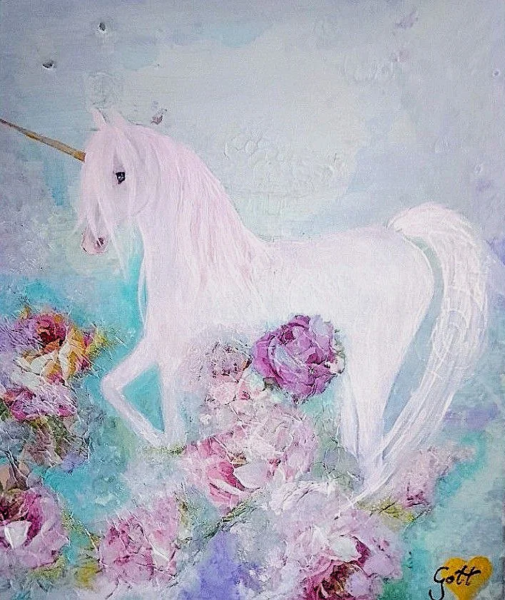
{kind=link}
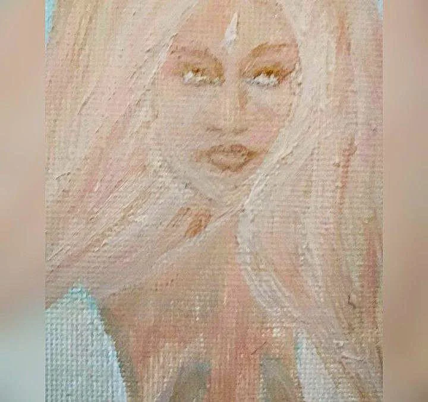
{kind=link}
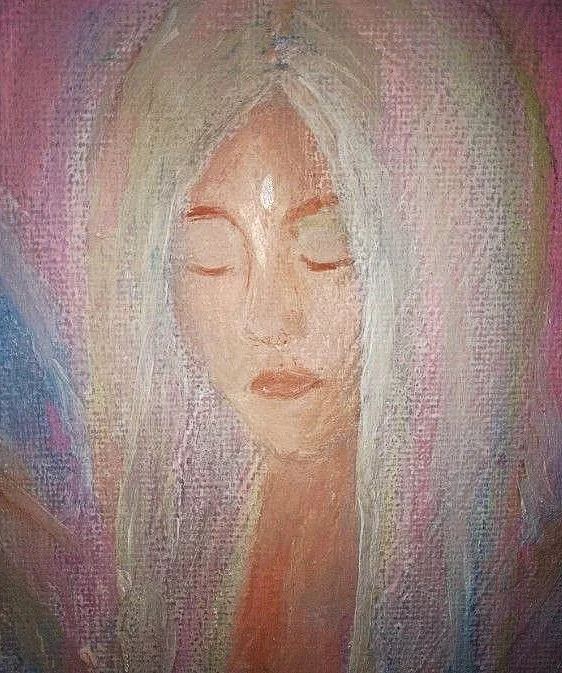
{kind=link}
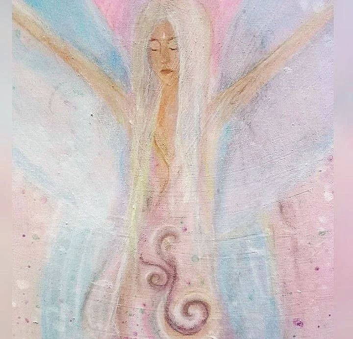
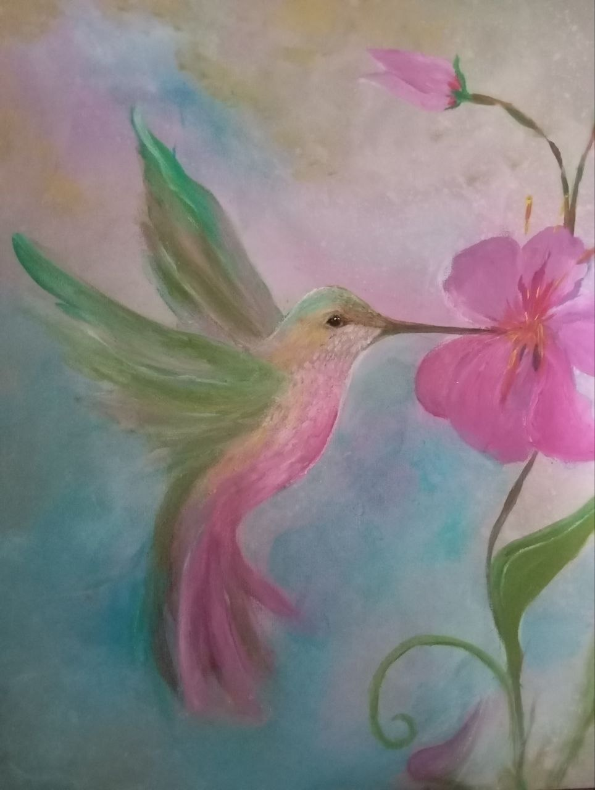
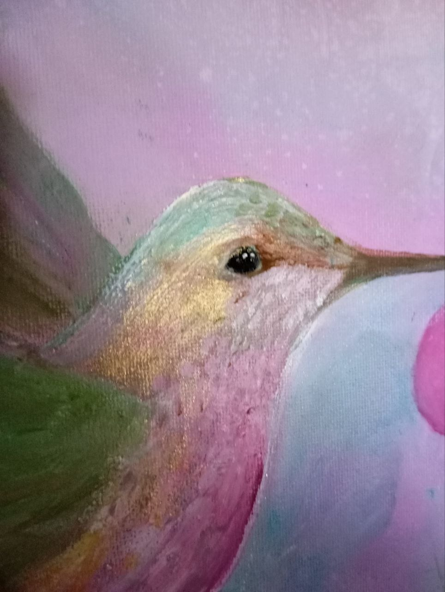
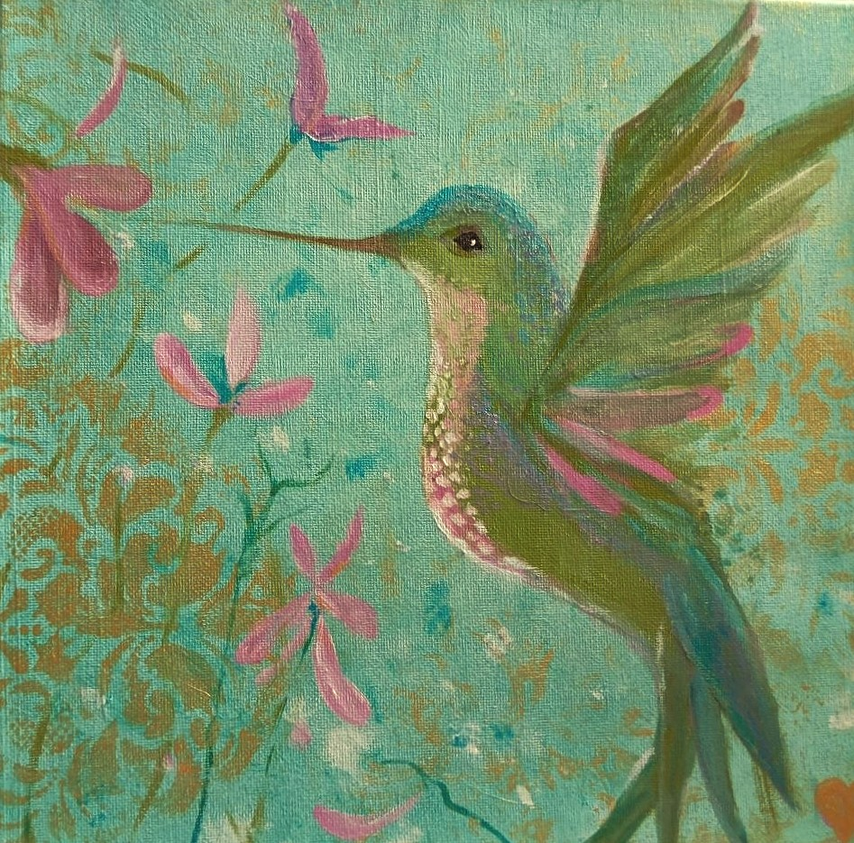
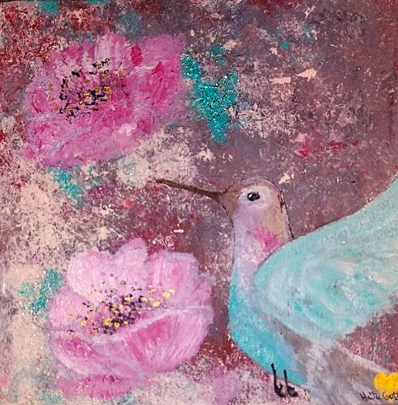
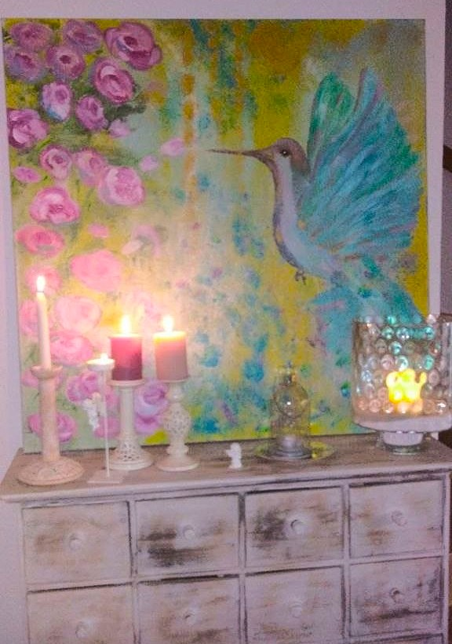
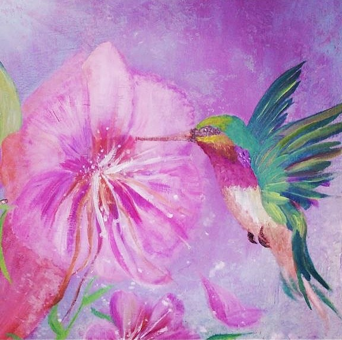
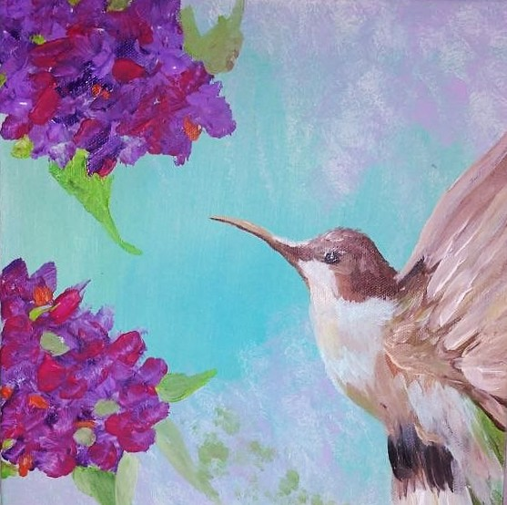
Jenseitskontakte
Jenseitskontakte geschehen bei mir in Trance. In Verbindung mit der geistigen Welt können sich Kontakte zu Vorausgegangenen oder Verstorbenen zeigen.
Dabei können sich Bilder, Worte, Gefühle oder feine Botschaften zeigen. Manchmal geht es um Klärung. Manchmal um Trost. Manchmal einfach um das tiefe Erleben, dass Liebe und Verbindung nicht mit dem physischen Abschied enden.
Es kann geschehen, dass offene Fragen Antworten finden, dass unausgesprochene Worte Raum bekommen oder dass etwas innerlich in Frieden kommen darf.
Jeder Kontakt geschieht achtsam und in einem geschützten Raum.
Energetische Haus- und Raumreinigung
Meine energetische Reinigung kann sich auf Wohnungen, Häuser, Grundstücke und besondere Plätze beziehen. Auch Räume und Orte tragen Energien und können beeinflussen, wie wir uns in ihnen fühlen.
Manchmal zeigen sich Unruhe, Schwere oder das Gefühl, dass etwas an einem Ort nicht stimmig ist. Durch meine Wahrnehmung und energetische Arbeit kann ich erspüren, was in einem Raum wirkt und Impulse für mehr Klarheit, Ruhe und Harmonie setzen.
Dazu kann auch gehören, energetische Portale oder Öffnungen wahrzunehmen, aufzuspüren und energetisch zu klären und zu versiegeln.
Gerade auch beim Einzug in eine neue Wohnung oder ein Haus kann eine energetische Reinigung sinnvoll sein. Räume können Eindrücke, Atmosphären oder emotionale Spuren vergangener Erfahrungen in sich tragen.
Eine energetische Reinigung kann helfen, einen Raum bewusst für einen neuen Anfang vorzubereiten. Manchmal zeigen sich Hinweise auch auf subtile Weise, zum Beispiel, wenn man sich in bestimmten Räumen häufig müde, traurig oder erschöpft fühlt, ein unwohles Gefühl da ist, man nie richtig zur Ruhe kommt oder sich nicht wirklich ungestört fühlt.
Auch auffallend schnell welkende Blumen können ein feiner Hinweis sein. Nach einer energetischen Reinigung wird oft ein Unterschied spürbar. Räume können sich leichter, klarer und harmonischer anfühlen.
Diese Begleitung kann persönlich oder auch aus der Ferne stattfinden.
Kontakt
Wenn du fühlst, dass dein Weg dich hierher geführt hat, freue ich mich auf unsere Begegnung.
Ein kostenfreies Erstgespräch zum Kennenlernen ist möglich. Im ersten Austausch können wir gemeinsam schauen, was dich bewegt und welcher Weg oder welche Form meiner Begleitung für dich stimmig sein könnte.
Kontakt über WhatsApp oder SMS:
0163 3671304
E-Mail:
seelen_stern@gmx.de
Ich freue mich über deine Nachricht und melde mich schnellstmöglich zurück.
Impressum
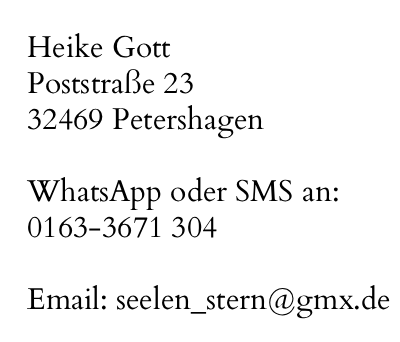
Rechtlicher Hinweis
Meine Arbeit versteht sich als spirituelle und energetische Begleitung.
Ich gebe keine Heilversprechen ab.
Meine Angebote ersetzen keine medizinische, psychologische oder therapeutische Behandlung.